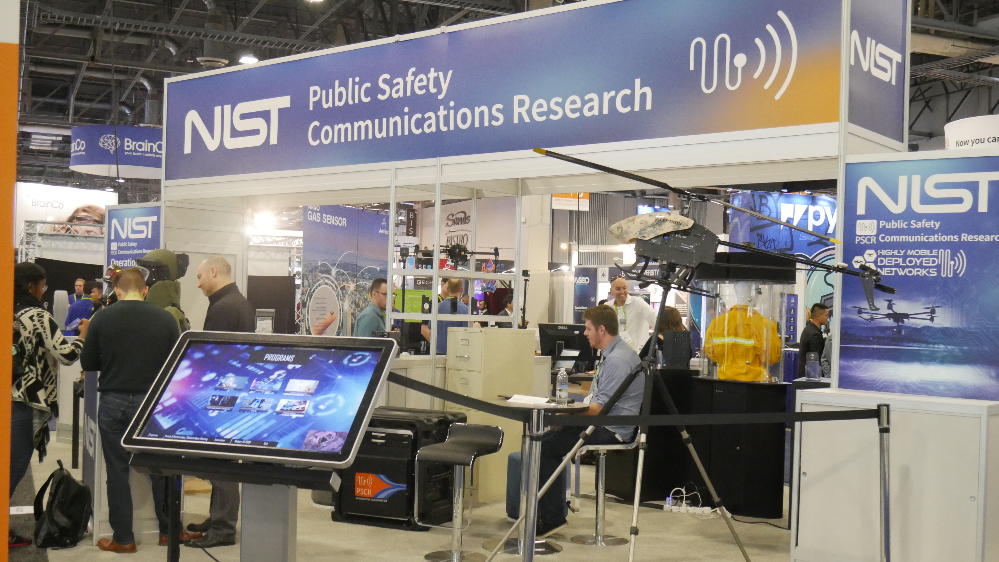

Introduction
This project was created during my internship at the National Institute of Standards and Technology in the Public Safety Communications research division. The goal of this project was to create an interactive kiosk for use by visitors in the office as well as at conferences and expos.
Tools
Photoshop, Sketch, Illustrator, HTML5, CSS, JavaScript, jQuery, After Effects
Duration
Year- Fall 2017 through Spring 2018
Process
User Research
For my internship, I was hired as a UI/UX designer and developer to supplement the work in the UI/UX department in the PSCR Division of NIST. Early in my internship, we determined that we needed a way to portray the information of what our team did to visitors in the office as well as when our team went to conferences and expos. Our main goal was to have a kiosk display for CES in January of 2018. I researched and synthesized the information necessary to portray to the users of the kiosk. I did many interviews with different members of the team to determine what information they thought was important to display and set out a plan to iteratively add features and information.
At every point during the development phase, we conducted interviews with the team to add more information as well as have user testing to make sure I was reaching my goal for the kiosk.
Interview Takeaways
During the user research portion, we decided to create a Timeline feature for information about the company, information on our grants and partnerships, research portfolios and prize and challenges. This was the important information for the company to portray to all incoming individuals to learn about who we are.
Objective
Create an interactive kiosk display that displays PSCR’s mission and information for individuals to learn more about.
Solution
While decided what to use for the development portion of this project we decided to stick to HTML, CSS, and JavaScript to have full control over the front end and to have it easily locally deployable on multiple machines. For the design, I wanted a balance of our three main stakeholders in public safety: firefighters, EMT, and police. For the timeline, I wanted to focus on our history as many people in the company and stakeholders knew limited information. I implemented an iterative approach to feedback from usability tests that we have continued to iterate on throughout my internship to provide the best solution possible.
CES Photo
The kiosk was on display in Las Vegas at the 2018 Consumer Electronics Show for our National Institute of Standards and Technology Public Safety Communication Research Division Booth.
Screen Recording of Kiosk
This video shows the current Kiosk interactivity and screens. It is a locally hosted website on our kiosk machine that is housed in the office and used mainly for visitors and tours. Every year it is taken to CES as well as our annual Stakeholder meeting.
Takeaways
This project taught me a lot about UI/UX and development in a professional setting. It was important to continuously go through the design process at every step and to utilize user feedback, interviews and testing to ensure the kiosk was the best that it could be.